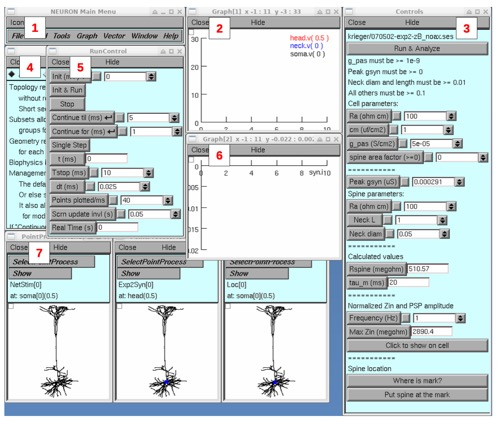
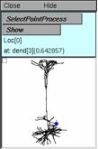
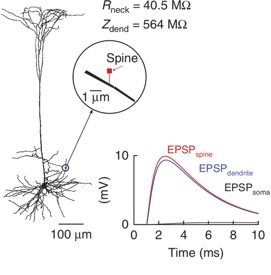
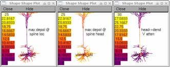

How to use the
source code from
Popovic, MA, Carnevale, N, Rozsa, B and Zecevic, D.
Electrical behaviour of dendritic spines as revealed by voltage imaging.
Nature Communications 6:8436, 2015. DOI 10.1038/ncomms9436. PMID 26436431.
Compile the mod files by executing
nrnivmodl
Then execute
nrngui init.hoc
This will start NEURON, which will create the model cell and present this user interface:

The items in the interface are (from left to right, top to bottom):
1. NEURON Main Menu panel
2. Graph that shows time course of membrane potential at three locations: middle of spine head, proximal end of spine neck (== potential at the point in the parent neurite to which the spine neck is attached), and root node of the soma ("most proximal point in the soma").
3. "Controls" panel for specifying model properties and performing various analyses.
4. CellBuilder that contains the detailed anatomical specification of the model cell. The name of the file that contains this data (070502-exp2-zB_noax.ses) is reported at the top of the Controls panel.
5. RunControl panel for launching individual simulation runs.
6. Graph that shows time course of course of current delivered by the synapse attached to the spine head (syn.i).
7. PointProcessManagers (PPMs) for: specifying properties of the NetStim that activates the synapse; showing the actual location of the synapse, and controlling the reversal potential and dynamics of the model synapse (an Exp2Syn); Loc[0], which you can use to control where the spine is attached.
Notice that each Graph and PPM has a white canvas with a little square in its top left corner. The square is called a "menu box".
First, make sure that the cell, synapse, and spine parameters in the Controls panel have these values:
Cell parameters:
Ra 100 ohm cm
cm 1 uf/cm2
g_pas 5e-5 S/cm2
spine area factor 0
Peak gsyn 0.000291 uS
Spine parameters:
Ra 100 ohm cm
Neck L 1 um
Neck diam 0.18 um
Use the GUI to change any values that are not correct. When the spine parameters are correct, Rspine will be 40.5 megohms.
|
Next, make sure the spine is attached to dend[3](0.642857). The PointProcessManager (PPM) for Loc[0] should look like this:  Note the position of the blue dot in the basilar field of the cell, and the message just above the PPM's canvas which says Loc[0] at: dend[3](0.642857) If you see something different, click on the cell image at the correct location and verify that the blue dot is now where it should be. It will be easier to do this if you first make the cell image larger by clicking and dragging the right lower corner of Loc[0]'s PPM down and to the right. |
|
When the dot is where you want it, click on the
Put spine at the mark
button at the bottom of the Controls panel. Three things will happen:
1. NEURON will print this message to the terminal (which might be behind some of NEURON's windows)
oc>moving spine to dend[3] 0.64285714
dend[3] nseg = 7 spine at 0.64285714
2. The blue dot in Exp2Syn[0]'s PPM will move to the location shown in Fig. 8a, confirming that the entire spine is now where it should be. If a new Shape Plot appears on top of the user interface, you can dismiss it by clicking on its Close button.
3. A new graph (called a "shape plot") will appear on the screen that shows the model cell with the spine's parent dendrite highlighted in red. To discard this shape plot, click on its Close button.
|
Now you're ready to run a simulation. In the RunControl panel, click on Init & Run and look at the graph that shows plots of head.v(0.5), neck.v(0), and soma.v(0) vs. time. To rescale this graph so it looks more like the graph in Fig. 8a, click on the little white menu box in the left upper corner of its canvas, drag the mouse pointer up slightly to reveal the graph's secondary menu, and then drag the pointer over to "View = plot". Release the mouse button and the graph should look like the inset in Fig. 8a.
|
 |
Click on the
Run & Analyze
button near the top of the Controls panel. This will march the spine over all of the segments in the model cell (you'll see the blue dot in the Exp2Syn PPM move), running a simulation at each point, for a total of 760 simulations over the course of about 20 seconds or less depending on the speed of your computer.
When this completes, many new graphs will appear, including XY plots of
voltage attenuation from spine head to dendrite (actually "site of spine attachment") vs. distance from soma to spine location
maximum depolarization in mV at spine head (red) and point of spine attachment (black) vs. distance in um from soma to spine. The difference between these is the voltage drop across the spine neck.
normalized maximum depolarization vs. distance from soma to spine. The Y coordinates of this graph are the Y values of the black points in the previous plot divided by the very largest depolarization observed in the cell
There will also be three color coded plots that show how spine location affects
maximum depolarization at the site of spine attachment (max depol @ spine loc)
maximum depolarization in the spine head (max depol @ spine head)
voltage attenuation from the spine head to the site of spine attachment (head->dend V atten)
These three graphs correspond to the EPSPdend, EPSPspine, and EPSPspine/EPSPdend components of Fig. 8b.

To generate a color coded plot that shows how input impedance Zin of the cell varies with location, in the Controls panel enter the frequency of interest (70 Hz for Fig. 8b) into the numeric field next to the Frequency button, then click on the button labeled
Click to show on cell
This will produce shape plots that show how Zin and normalized Zin vary over the cell, and how spine location affects normalized EPSP amplitude at the site of spine attachment. The one labeled "Zin 70.0 Hz" corresponds to the "Zdendrite (70Hz)" component of Fig. 8b.